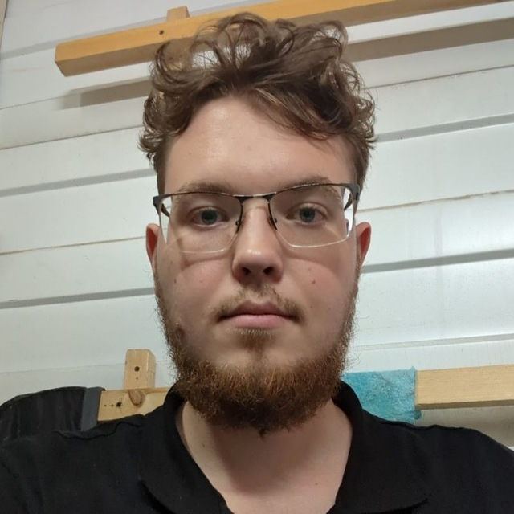

Студент 3 курса, специальность «Информационные системы»
Университет «Туран», Алматы, Казахстан
Изучаю информационные системы в университете «Туран» (группа ИС-252 "3" ). Интересуюсь веб-разработкой и системами на базе 1С. Прошёл стажировку в сфере технической поддержки, где работал с реальными пользователями и бизнес-системами.
| Учебное заведение | Специальность | Курс |
|---|---|---|
| Университет «Туран», Алматы | Информационные системы (6В06101) | 3 курс |
| Навык | Уровень |
|---|---|
| HTML / CSS | Низкий |
| 1С:CRM (поддержка пользователей) | Практический опыт |
| Работа с ПК / техподдержка | Средний |